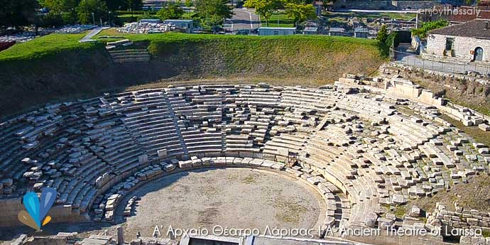
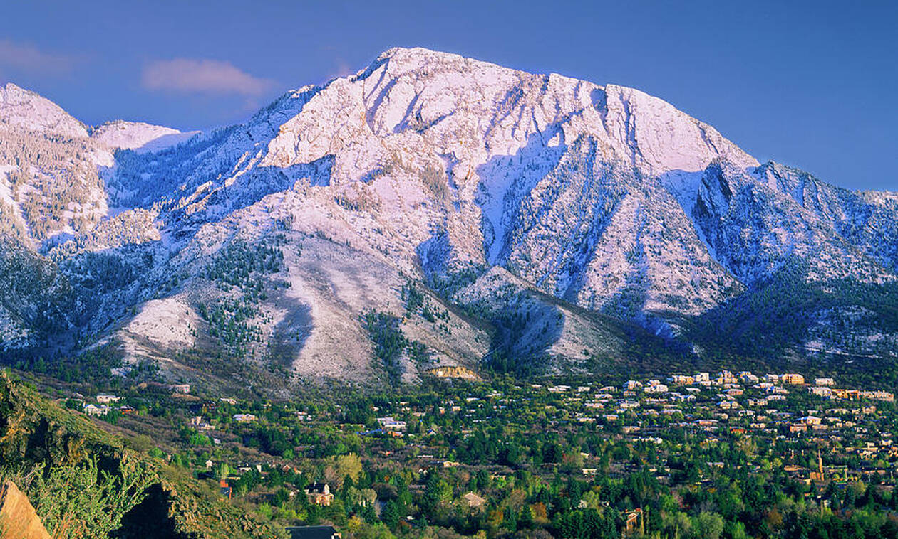
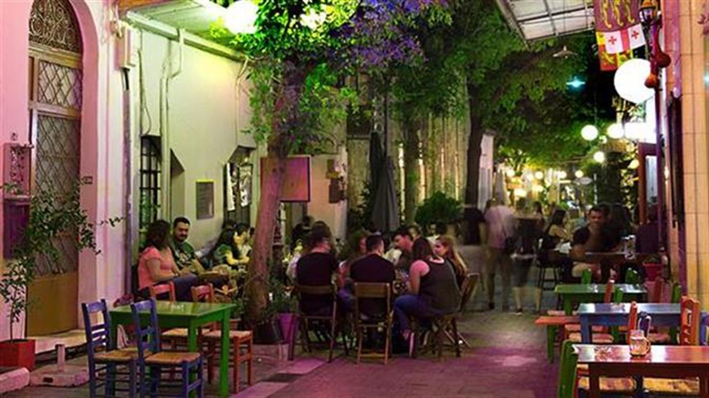

Top three activities to do at Larisa

Visit the Ancient Theatre
Larisa has one of the most Ancient Theatre in Greece, so if you are in town go and give it a visit!

Climb Olympus
Olympus is the mountain were the ancient people believed that the Greek Gods was living there! Now this is your chance to go for a hike and who knows, maybe you will encounter and one of the old Gods...!🧐

Try Larisa's Coffee
In Greece Larisa is famous for its coffee and a lot of people are calling it as The town of Coffee and this is why you should try our famous capuchino or if yoy are visiting at out hot periods...our fredo capuchino ☕️😋